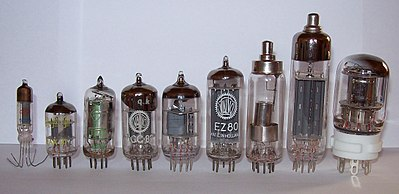
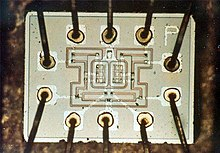
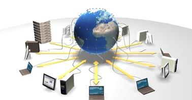

Винаходи обчислювальної техніки
Різні винаходи зробили революцію в обчислювальній техніці. Ось деякі з найбільш важливих і впливових:
Механічні рахункові машини
Машина Блейза Паскаля, створена в 1642 році, була однією з перших обчислювальних машин. Вона була здатна виконувати базові арифметичні операції і була важливим кроком на шляху до розвитку сучасних комп'ютерів.

Аналітична машина
Аналітична машина Чарльза Бебіджа, розроблена в 19 столітті, є предком сучасних комп'ютерів. Хоча машина Бебіджа ніколи не була завершена, її концепції стали основою для розробки наступних обчислювальних машин.

Вакуумні лампи
Вакуумні лампи, вперше застосовані в комп'ютерах в 1940-х роках, були ключовим елементом ранніх електронних комп'ютерів, таких як ENIAC. Вони забезпечували електронне управління, яке було швидшим і надійнішим порівняно з механічними елементами.
Транзистори
У 1950-х роках транзистори замінили вакуумні лампи і стали основою для нових поколінь комп'ютерів. Вони є значно меншими, ефективнішими і довговічнішими.

Інтегральні схеми
Розробка інтегральних схем в 1960-х роках дозволила розміщувати великі кількості електронних компонентів на одній платі, що призвело до значного зменшення розмірів і вартості комп'ютерів.
Мікропроцесори
Мікропроцесори, такі як Intel 4004, які з'явилися в 1971 році, стали основою для персональних комп'ютерів, революціонізувавши обчислювальну техніку та зробивши її доступною для широкої аудиторії.

Персональні комп'ютери
Персональні комп'ютери, такі як Altair 8800 (1975) і Apple I (1976), стали першими комп'ютерами, які користувалися великим попитом серед аматорів і невеликих бізнесів, завдяки своїй доступності і простоті використання.

Інтернет та мережеві технології
Інтернет, що почав розвиватися в 1960-х роках і здобув популярність у 1990-х, став важливим аспектом сучасних комп'ютерних систем, забезпечуючи глобальне з'єднання і обмін інформацією.
